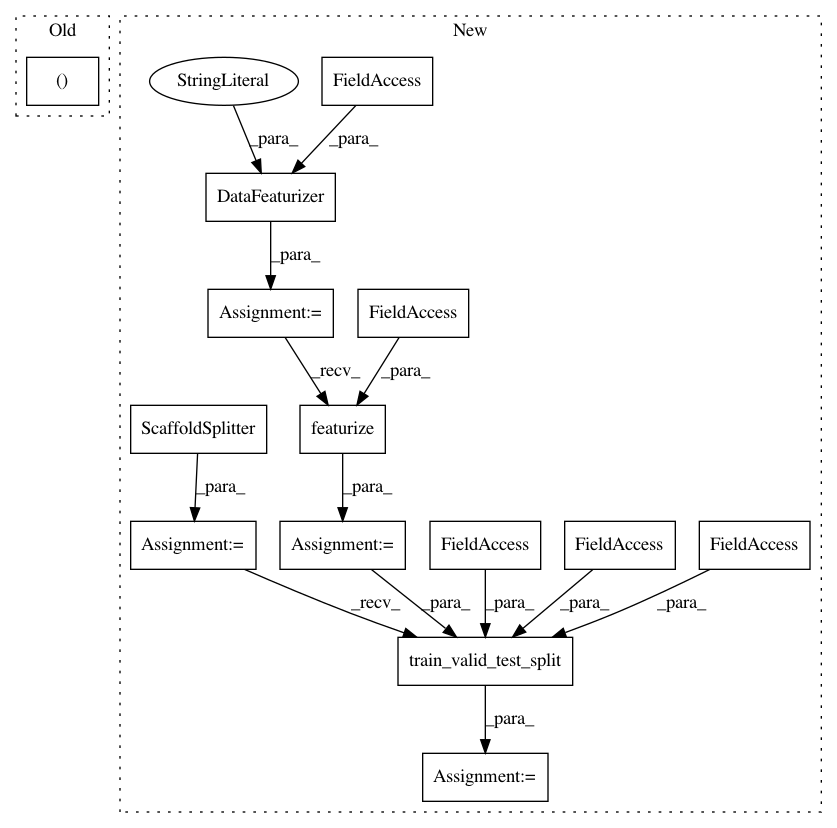

ee2bc2a8daaba5717e49917831ddf8229d1ebe70,deepchem/hyperparameters/tests/test_hyperparam_opt.py,TestHyperparamOptAPI,test_singletask_sklearn_rf_ECFP_regression_hyperparam_opt,#TestHyperparamOptAPI#,49
Before Change
task_type = "regression"
task_types = {task: task_type for task in tasks}
input_file = "example.csv"
train_dataset, valid_dataset, _, output_transformers, = \
self._featurize_train_test_split(
splittype, compound_featurizers,
complex_featurizers, input_transformer_classes,
After Change
task_type = "regression"
task_types = {task: task_type for task in tasks}
input_file = os.path.join(self.current_dir, "example.csv")
featurizer = DataFeaturizer(tasks=tasks,
smiles_field=self.smiles_field,
featurizers=featurizers,
verbosity="low")
dataset = featurizer.featurize(input_file, self.data_dir)
splitter = ScaffoldSplitter()
train_dataset, valid_dataset, test_dataset = splitter.train_valid_test_split(
dataset, self.train_dir, self.valid_dir, self.test_dir)
input_transformers = []
output_transformers = [
NormalizationTransformer(transform_y=True, dataset=train_dataset)]
In pattern: SUPERPATTERN
Frequency: 3
Non-data size: 14
Instances
Project Name: deepchem/deepchem
Commit Name: ee2bc2a8daaba5717e49917831ddf8229d1ebe70
Time: 2016-05-30
Author: bharath.ramsundar@gmail.com
File Name: deepchem/hyperparameters/tests/test_hyperparam_opt.py
Class Name: TestHyperparamOptAPI
Method Name: test_singletask_sklearn_rf_ECFP_regression_hyperparam_opt
Project Name: deepchem/deepchem
Commit Name: ee2bc2a8daaba5717e49917831ddf8229d1ebe70
Time: 2016-05-30
Author: bharath.ramsundar@gmail.com
File Name: deepchem/hyperparameters/tests/test_hyperparam_opt.py
Class Name: TestHyperparamOptAPI
Method Name: test_multitask_tf_mlp_ECFP_classification_hyperparam_opt
Project Name: deepchem/deepchem
Commit Name: ee2bc2a8daaba5717e49917831ddf8229d1ebe70
Time: 2016-05-30
Author: bharath.ramsundar@gmail.com
File Name: deepchem/hyperparameters/tests/test_hyperparam_opt.py
Class Name: TestHyperparamOptAPI
Method Name: test_multitask_keras_mlp_ECFP_classification_hyperparam_opt